grok-4.6 · 25분 균일 예산 · 공통 이미지 6장 · 결정적 일관성 감사(교차 페이지 computed-style 동일성 · nav/링크 무결성 · 토큰 충돌) · 패치 7 첫 검증(상태 스위처 금지 · 커스텀 컨트롤 · 시각 계약 · critique.md 자가 비평).
| arm | 페이지 | 일관성 | axe 합 | 시간 | 토큰(in/out) | 비용* |
|---|---|---|---|---|---|---|
| Model only | 4/4 | PASS | 0 | 6.5분 | 87k/55k | $0.51 |
| UI UX Pro Max | 4/4 | PASS | 4 | 9.3분 | 135k/78k | $0.74 |
| Hallmark | 4/4 | PASS | 0 | 10.1분 | 270k/77k | $1.01 |
| OmD Autopilot p7 | 4/4 | PASS | 0 | 16.8분 | 309k/126k | $1.38 |
*OpenRouter x-ai/grok-4.6 $2/$6 per M (2026-08-18)
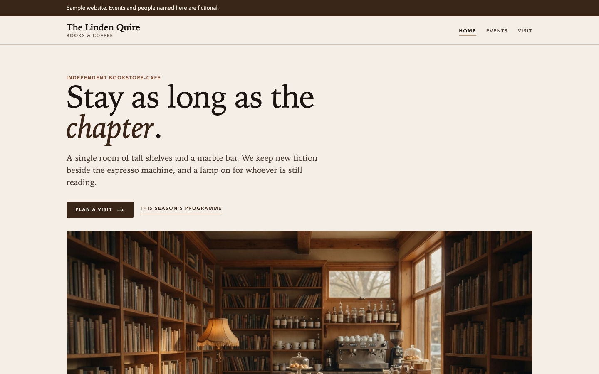
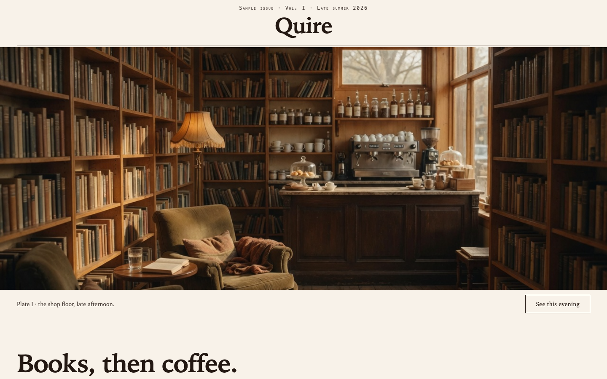
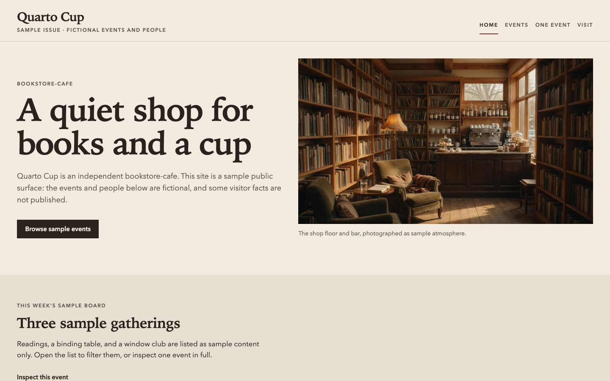
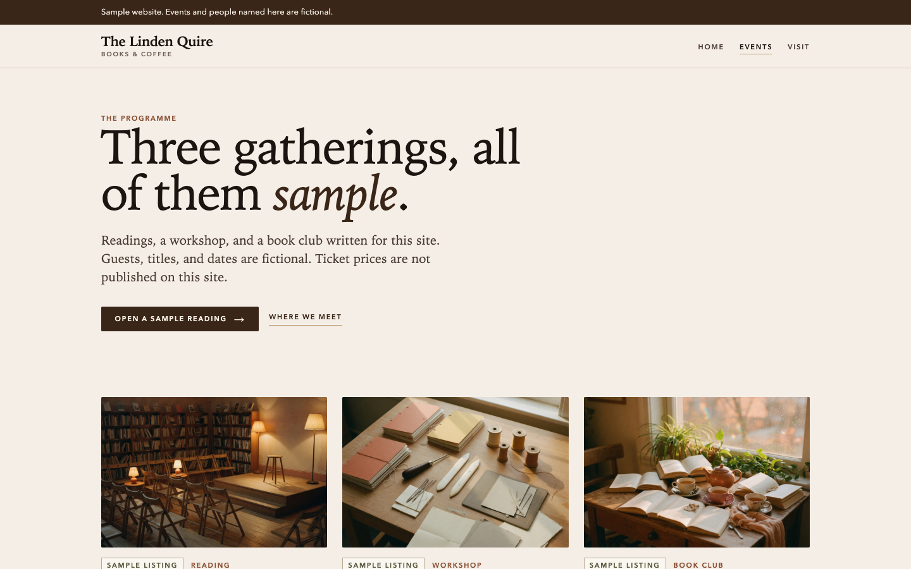
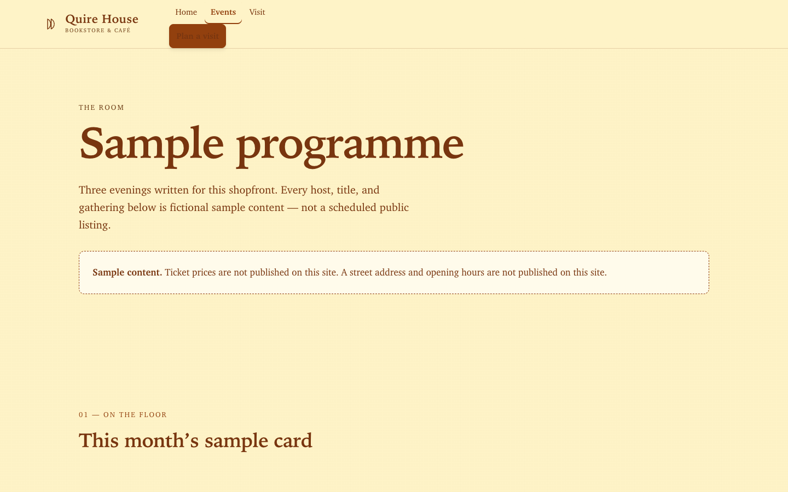
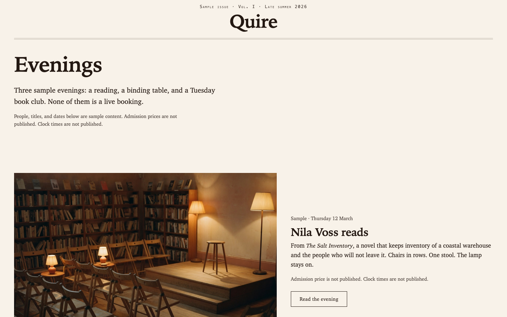
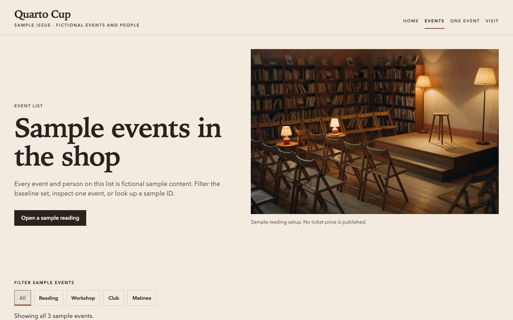
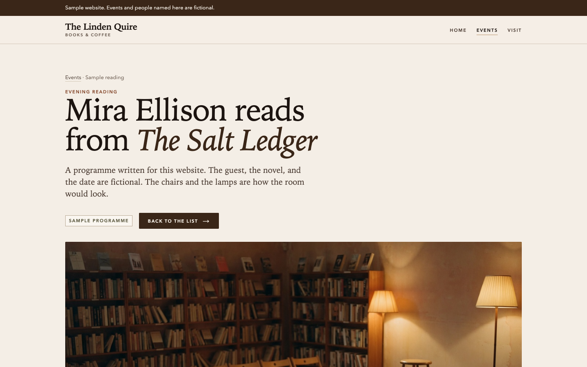
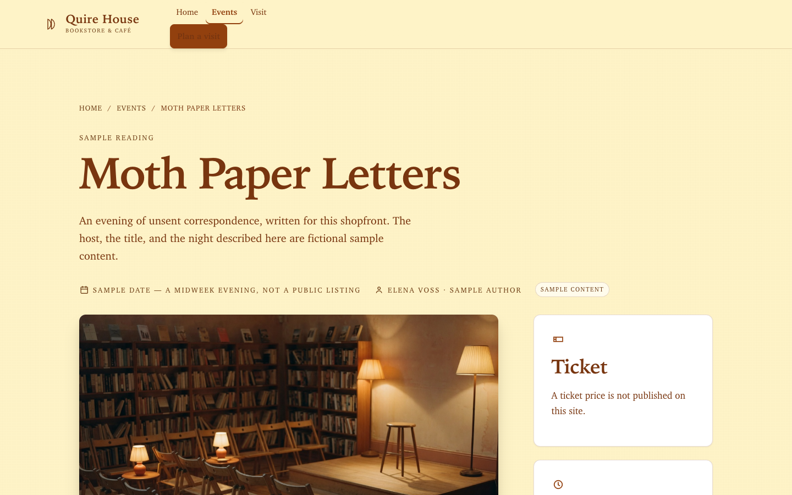
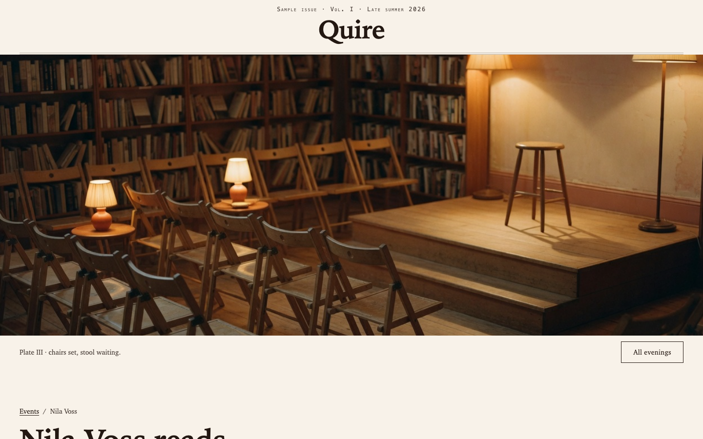
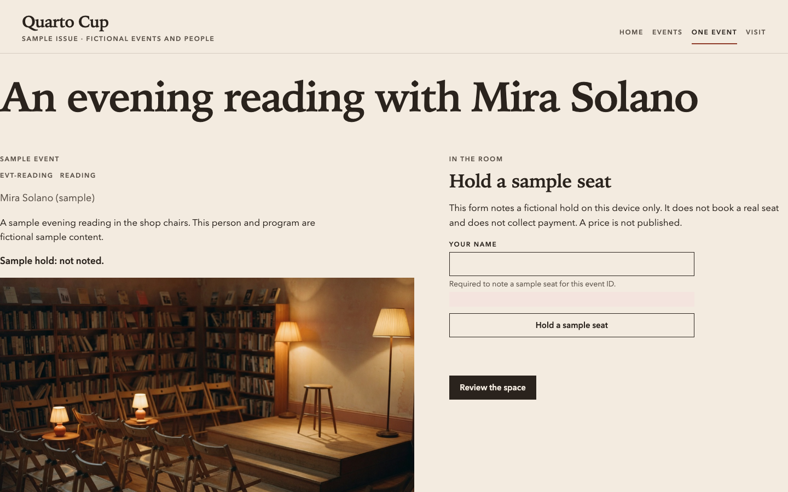